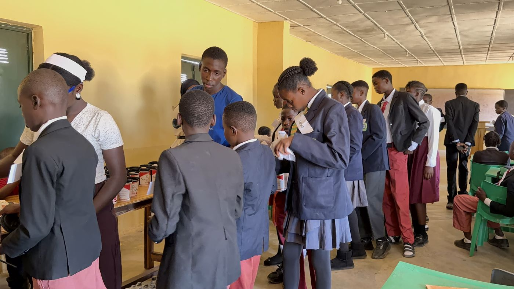

A parliament is, stripped of its ceremony, a machine for disagreeing without destroying something.
Rules for who speaks. A way to lose a vote and still stay in the room. A record anybody can check. For twenty years the question in Plateau has not been whether people disagree — it has been what happens next. The generation that will either repeat that or end it is in junior secondary school right now.
They sit again next term, whether we are in the room or not. That is how you know it belongs to them.